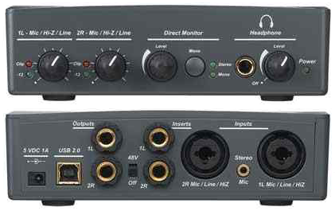

У владельцев USB-шных звуковых карточек семейства E-mu Tracker Pre/E-mu 0202 USB/E-mu 0404 USB существует проблема: при стандартных настройках не работает регулятор громкости. Это выглядит так: перемещение движка настройки громкости звука не влияет на громкость звука. Только в самом крайнем положении звук просто выключается.
Карточка хорошая, и очень обидно, что в Linux её поддержка сделана не до конца.

В этой статье предпринята попытка разобраться, как можно решить проблему регулировки громкости, и заставить работать если не встроенный в карточку хардварный регулятор громкости, так хотя бы программный, присутствующий в звуковой подсистеме Linux. Настройка будет производиться для звукового сервера Pulse Audio. По идее, эти же настройки должны исправлять и управление громкостью в ALSA, но информации об этом в сети крайне мало.
Все нижеперечисленные настройки справедливы для Debian GNU/Linux 8.6 (jessie). Ядро: Linux 3.2.0-4-686-pae #1 SMP Debian 3.2.32-1 i686 GNU/Linux, версия PulseAudio 5.0. Рабочий стол KDE 4.14.2.
Сбор сведений о звуковой карточке
Для начала нужно получить все сведения о настраиваемой звуковой карте. Сделать это можно вот по такой памятке:
Какие диагностические данные можно узнать о звуковой карте под Linux
Определение текущего контроллера, который управляет громкостью
Для проведения настройки необходимо определить имя текущего системного контроллера, который отвечает за регулировку звука на USB-звуковушке. Предполагается, что уже известен хардварный номер звуковой карты (как это сделать написано по ссылке выше). В нашем случе хардварный номер будет 1.
Выполняем команду amixer с ключем -c, указав хардварный номер 1:
$ amixer -c 1
Simple mixer control 'PCM',0
Capabilities: pvolume pswitch pswitch-joined
Playback channels: Front Left - Front Right
Limits: Playback 0 - 200
Mono:
Front Left: Playback 185 [92%] [-7.50dB] [on]
Front Right: Playback 185 [92%] [-7.50dB] [on]
Simple mixer control 'Clock rate Selector',0
Capabilities: volume volume-joined
Playback channels: Mono
Capture channels: Mono
Limits: 0 - 5
Mono: 1 [20%]
Simple mixer control 'Main',0
Capabilities: volume
Playback channels: Front Left - Front Right
Capture channels: Front Left - Front Right
Limits: 0 - 255
Front Left: 235 [92%]
Front Right: 235 [92%]
Здесь названия контроллеров 'PCM', 'Clock rate Selector', 'Main' - это так называемые control name, которые используются в файлах /usr/share/pulseaudio/alsa-mixer/paths/analog-output.conf и /usr/share/pulseaudio/alsa-mixer/paths/analog-output.conf.common.
Тут нужно сделать ремарку, и сказать, что файл analog-output.conf.common инклюдится в конце файла analog-output.conf , то есть оба эти файла участвуют в настройках звуковой подсистемы PulseAudio.
Указанные выше control name используются при создании наименований секций в этих настроечных файлах. Например, для контроллеров 'PCM', 'Clock rate Selector', 'Main' могут существовать секции:
[Element PCM]
[Element Clock rate Selector]
[Element Main]
Нас будет интересовать секция [Element PCM]. Кстати, по такому же принципу могут существовать секции для контроллеров системных миксеров, получаемых командой amixer без аргументов. То есть, если имеем контроллеры Master и Capture, значит могут существовать секции [Element Master] и [Element Capture].
Подключение программного миксера
Кто хорошо знает английский, может для начала прочитать обсуждение на Stack Overflow:
How to force software master volume control in PulseAudio?
Далее я напишу по-русски, о чем идет речь.
В этом обсуждении рассказывается, что делать в том случае, если не работает регулятор громкости для USB-карточки. То есть, регулятор громкости только включает и выключает звук. Это происходит из-за того, что для внешней USB-карточки семейства E-MU в стандартном драйвере нет реализации команд для полноценной хардварной поддержки, поддерживаются только примитивные команды включения/выключения звука. Для решения этой проблемы можно сделать программную регулировку звука. Забегая вперед, скажу, что падения качества звучания с включенной программной регулировкой громкости я не заметил.
Как говорят наши англоязычные коллеги, где-то в глубинах PulseAudio имеется некий флаг HW_VOLUME_CTRL. Что он из себя представляет - неясно, но вроде как благодаря ему ядерная подсистема alsa-mixer (а мы не забываем, что PulseAudio - это всего-навсего надстройка над ALSA) берет следующие настройки из файла /usr/share/pulseaudio/alsa-mixer/paths/analog-output.conf.common:
[Element PCM]
switch = mute
volume = merge
И существует возможность сказать PulseAudio, чтобы она игнорировала эти настройки. То есть, для PCM-контроллера можно указать не использовать присоединение к стандартному гегулятору громкости (volume = merge), а начать использовать софтварный регулятор громкости.
Для этого нужно создать два файла:
/usr/share/pulseaudio/alsa-mixer/paths/emu-usb-output.conf
/usr/share/pulseaudio/alsa-mixer/profile-sets/emu-usb.conf
В файле /usr/share/pulseaudio/alsa-mixer/paths/emu-usb-output.conf нужно прописать следующее:
# This is handmade create config
[Element PCM]
switch = mute
volume = ignore
А в файл /usr/share/pulseaudio/alsa-mixer/profile-sets/emu-usb.conf надо записать следующее:
# This is handmade create config
[General]
auto-profiles = yes
[Mapping emu-usb-stereo]
device-strings = hw:%f
channel-map = left,right
paths-output = emu-usb-output
Затем надо сказать PulseAudio чтобы он начал использовать эти новые файлы профиля для данной карточки. Делается это путем установки UDEV - окружения с помощью прописывания правила:
ENV{PULSE_PROFILE_SET}=emu-usb.conf
... либо загрузкой настроек в модуль module-alsa-card вручную. Для этого в файле /etc/pulse/system.pa нужно прописать примерно следующее:
load-module module-alsa-card device_id=USB name="emu-usb" card_name="emu-usb" profile_set=emu-usb.conf profile="output:emu-usb-output" ...
В результате некая настройка PulseAudio, именуемая alsa_output.emu-usb.emu-usb-stereo будет работать без флага HW_VOLUME (ранее буржуин говорил о HW_VOLUME_CTRL, может он тут ошибся), и обычный контроль громкости звука PulseAudio начнет работать через все приложения ALSA.
Прописывание UDEV правила
Выше было сказано, что для применения настроек, заданных в новых файлах профиля, можно использовать возможность прописывания UDEV правила. Вот как это делается.
Под рутом надо зайти в каталог /etc/udev/rules.d, и создать там файл с именем 10-local.rules, если такового еще нет. Если есть - можно писать прямо в него.
Далее надо определить USB-идентификаторы звуквой карты - ID вендора и ID устройства. Для этого требуется выполнить следующую команду:
# lsusb
Bus 002 Device 001: ID 1d6b:0002 Linux Foundation 2.0 root hub
Bus 008 Device 003: ID 1c4f:0002 SiGma Micro Keyboard TRACER Gamma Ivory
Bus 008 Device 002: ID 093a:2521 Pixart Imaging, Inc.
Bus 008 Device 001: ID 1d6b:0001 Linux Foundation 1.1 root hub
Bus 007 Device 001: ID 1d6b:0001 Linux Foundation 1.1 root hub
Bus 006 Device 002: ID 041e:3f0a Creative Technology, Ltd
Bus 006 Device 001: ID 1d6b:0001 Linux Foundation 1.1 root hub
Bus 001 Device 002: ID 8564:4000
Bus 001 Device 001: ID 1d6b:0002 Linux Foundation 2.0 root hub
Bus 005 Device 001: ID 1d6b:0001 Linux Foundation 1.1 root hub
Bus 004 Device 001: ID 1d6b:0001 Linux Foundation 1.1 root hub
Bus 003 Device 001: ID 1d6b:0001 Linux Foundation 1.1 root hub
Если непонятно, какое устройство соответствует USB-звуковушке (Creative ведь выпускает не только звуковые карты), можно дать такую команду:
# lsusb -t
...
/: Bus 06.Port 1: Dev 1, Class=root_hub, Driver=uhci_hcd/2p, 12M
|__ Port 2: Dev 2, If 0, Class=Vendor Specific Class, Driver=snd-usb-audio, 12M
|__ Port 2: Dev 2, If 1, Class=Vendor Specific Class, Driver=snd-usb-audio, 12M
|__ Port 2: Dev 2, If 2, Class=Vendor Specific Class, Driver=snd-usb-audio, 12M
...
Тут уже однозначно видно, что на шине 6, на порту 2 находится звуковая карта.
Из этого набора данных нам нужны сведения о USB-идентификаторах. Вот они: "ID 041e:3f0a". Первое число - это ID вендора, второе число - это ID устройства.
Теперь можно составить UDEV правило:
ATTRS{idVendor}=="041e", ATTRS{idProduct}=="3f0a", ENV{PULSE_PROFILE_SET}="emu-usb.conf"
Обратите внимание на двойные и одинарные знаки равно "=". У атрибутов они двойные, у значения ENV - одинарные. Это потому, что двойные знаки равно используются для задания правил фильтрации контекста применимости задаваемого значения. А установка значения - оно и есть установка значения через обычный знак равно.
Строку с UDEV правилом надо прописать в файл /etc/udev/rules.d/10-local.rules и перегрузиться. Если вы все сделали правильно, у вас заработает регулятор громкости.
Результат
Регулятор громкости заработал. Честно говоря, я уже не верил, что смогу разобраться как конфигурировать звуковые устройства под Linux. На все эти изыскания в короткие моменты свободного времени у меня ушел почти год. Кажется, Linux действительно еще не готов для десктопа.